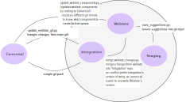

Until 2019, our (website) translation infrastructure relied on translators being able to know how to use Git. This was a pretty high entry barrier for new translators, especially those who are not familiar with Git or the command line.
This is the technical design documentation of our new setup. It is by no means perfect. We track known issues via issues on GitLab.
Terminology used in this document
- Canonical Git repository: the main Tails Git repository that our website is built from, in scripts often called "main repository" or "main Git"
- Production server: the server that hosts our website
- translate.lizard: the VM that hosts our Weblate web interface, the corresponding Git repositories, as well as the staging website.
Setup and integration with our infrastructure
We are using our own Weblate instance.
Weblate uses a clone of the Tails main Git repository, to which translations get committed and pushed once they have been approved by a user with reviewer status. Non-approved translations live on Weblate's database only, until they get reviewed. A staging website allows translators to preview non-reviewed translations in context.
Approved changes are automatically fed back into our canonical Git repository. This presents a major challenge, because we need to ensure that:
No merge conflict occurs:
- such conflicts often occur in PO file headers which prevents Weblate from automatically merging changes
- many contributors work on the same code base using different tools (PO files can be edited by hand, using translation software such as Poedit, or they are generated by ikiwiki itself, which results in different formatting)
Only PO files are committed.
The committed PO files comply with shared formatting standards.
No compromised code is introduced.
In order to integrate Weblate and the work done by translators into our process, we have set up this scheme:

Website and Weblate
Our website uses ikiwiki and its PO plugin.
It uses markdown files for the English original language and carries a PO file for each translated language. Thereby we distinguish languages that are activated on our website from languages that have translations but are not yet activated on the website because they do not cover enough of our core pages to be considered usable.
We have defined a list of tier-1 languages, that we consider to be of importance to our user base. No more languages shall be activated in Weblate as our main Git repository carries reviewed, and thus approved translations of all languages enabled on the Weblate platform, while only part of them are active on the website.
Each PO file corresponds to a single component in Weblate, in order to appear in the Weblate interface. For example, the component:
wiki/src/support.*.po
relates to the files support.mdwn, support.es.po, support.de.po, support.pot,
etc.
Repositories
The repository used by Weblate is cloned and updated from the master branch of the Tails main repository. Changes generated on Weblate's copy of the Tails main Git repository, located on the VM which hosts the Weblate platform, are automatically fed back to the master branch of the Tails main repository. This happens through a number of scripts, checks, and cronjobs that we'll describe below.
There are several languages enabled, some of them with few or no translations. As everything is fed back to the Tails canonical repository, all files are available when cloning this repository:
git clone https://gitlab.tails.boum.org/tails/tails.git
If needed, for exceptional means, Weblate's Git repository can be cloned or added as a remote:
git clone https://translate.tails.boum.org/git/tails/index/
At the server the repository is located in:
~weblate/repositories/vcs/tails/index
Weblate can commit to its local repository at any time, whenever translations get approved. Changes done in the canonical repository by Tails contributors via Git and changes done in Weblate thus need to be merged — in a safe place. This happens in an integration repository:
~weblate/repositories/integration
On the VM (translate.lizard), a third repository is used for the staging website:
~weblate/repositories/vcs/staging
Automatic merging and pushing
The integration of changes from the different repositories is done by a
script which is executed on the VM hosting Weblate as
a cronjob.
The
cron.sh
script has the following steps which we will explain below:
- Canonical → Integration: Update the integration repository with changes made on the canonical repository (called "main" in the script).
- Make Weblate locally commit any pending approved translation
- Weblate → Integration: Integrate committed changes from Weblate into the integration repository
- Integration → Canonical: Push the up-to-date integration repository to the canonical repository.
- Canonical → Weblate: Pull from the canonical repository and update the Weblate components.
- Update Weblate's index for fulltext search
Whenever a contributor modifies a markdown (*.mdwn) file and pushes
to master, the corresponding PO files are updated, that is: the
translatable English strings within those files are updated. This
update happens:
- on the production server itself, when building the wiki;
- only for languages that are enabled on the production website.
We need to ensure on the translation platform server, that PO files for additional languages (that are enabled on Weblate but not on the production website) are equally updated, committed locally, and pushed to the canonical Git repository. On top of this we need to update Weblate's database accordingly, so that translatable strings can be updated for new or modified English strings in those files, in all languages.
Step 1: Canonical → Integration
Update the integration repository with changes made on the canonical repository
The script fetches from the canonical (remote) repository and tries to
merge changes into the (local) integration repository. The merge
strategy used for this step is defined in
merge_canonical_changes.py:
When this script is executed, it merges changes in PO files based on
single translation units (msgids). A merge conflict occurs when the same
translation unit has been changed both in the canonical and the integration
repository (in the latter case, this would mean that the change has been
done via Weblate). In such a case, we always prefer the canonical
version. This makes sure that Tails developers can fix issues in
translations and have priority over Weblate.
Due to this procedure we never end up with broken PO files. However, we may loose a translation done on Weblate.
Until here, only PO files of languages that are activated on our production website will be merged, as the production website does not refresh PO files for languages that are not activated there, so these PO files are outdated in the canonical Git repository at this point.
Because of this limitation of ikiwiki, once the activated language PO files are merged, the script checks if PO files of other languages, that are not activated in production, need updating. We do this by generating POT files out of a PO file that we've previously defined as the default language. We do this for all components. If the actual POT file, generated on the production server, differs from the POT file we've just created, then every additional language PO file needs to be updated.
On top of this, if the PO file of the default language (that is, its Markdown file) has been renamed, moved, or deleted, then the PO files of additional languages need to be accordingly renamed, moved, or deleted.
In summary, our script applies all changes detected on the default language to the additional languages.
With python-git creating a diff against working directory against the index
is very error-prone. But a diff between two commits works fine. That's why we
always create a new commit within the described script, but often those commits
don't change the content of any file. In order to omit these empty unnecessary
commits our script also detects when a fast-forward is possible (the master
branch is updated to HEAD of either the canonical or the integration branch).
If only Weblate or only modifications on the canonical repository introduces
new commits and the merge commit is empty, a fast-forward can be done, by a
force reset to the desired HEAD.
Step 2: Trigger commits
Weblate tries to minimize the number of commits (aka. "lazy commits"), so we need to explicitly to ask Weblate to commit every component which has outstanding changes since more than 24 hours.
This is done by triggering Weblate to commit pending approved
translations using the internal command (manage.py commit_pending).
Step 3: Weblate → Integration
Merging changes from Weblate's Git repository into the integration repository
The script fetches from the Weblate (remote) Git repository and tries to
merge changes into the (local) integration repository. The merge
strategy used for this step is defined in
merge_weblate_changes.py.
Changes already present in the integration repository are preferred over the changes from the remote, Weblate repository. This makes fixes done to PO files manually, via the canonical Git repository, stick and propagate to Weblate.
Again, PO file merges are done on translation units (msgids).
Furthermore, we make sure via the script that Weblate has only modified PO files; indeed we automatically reset everything else to the version that exists in canonical.
Step 4: Integration → Canonical
Pushing from the integration repository to our canonical repository, aka "production"
After updating the Integration repository, we push the changes back to Canonical aka puppet-git.lizard. After this, the Canonical repository has everything integrated from Weblate.
On the side of the canonical Git repository, a Gitolite hook
(tails-weblate-update.hook)
makes sure that Weblate only pushes changes on PO files.
This hook also checks and verifies the committer of each commit, to make
sure only translations made on the Weblate platform are automatically
pushed. Otherwise
the push is rejected, for security reasons.
Step 5: Canonical → Weblate
Integrating the changes made in the Canonical Git repository into the Weblate repository
After having merged changes from the canonical Git repository into the
integration Git repository, and integrated changes from Weblate there,
we can assume that every PO file is now up-to-date, both in the Integration
and Canonical repositories. Hence we can try to pull from the Canonical
repository using a fast-forward only merge (git pull --ff-only). The
canonical and Weblate repositories may see new commits anytime. This
means: while our cronjob is running a new commit can be made. Then, a
new commit on one side (canonical or Weblate), prevents a
fast-forward. When this happens, the cronjob is run 5 minutes later
anew, and then steps 1, 3 and 4 of the cronjob aim at fixing the cause of
why the fast-forward was not possible this time.
If the fast-forward merge was successful, we need to update Weblate's components
to reflect the modifications that happened in Git, such as
string and file updates, removals, renames, or additions. This is
handled by another script:
update_weblate_components.py.
Besides our scripts that modify the Weblate repository, Weblate itself
keeps creating commits and updates the master branch. That's why the
script is using a dedicated Git remote named cron to keep track of which
commits need to be looked at for Weblate component changes. This remote
name is set in
weblate.pp
and used in the cronjob like this:
update_weblate_components.py --remoteBranch=cron/master [...]
Step 6
Run manage.py update_index.
This updates Weblate's index for fulltext search.
Weblate upstream authors recommend running it every 5 minutes.
Staging website
Goals
In order to allow translators to see their non committed suggestions as well as languages which are not activated on https://tails.boum.org, we have put in place a staging website. It is a clone of our production website and is regularly refreshed.
On top of what our production website has, it includes:
all languages available on Weblate, even those that are not enabled on our production website yet;
all translation suggestions made on Weblate.
This allows:
translators to check how the result of their work will look like on our website;
reviewers to check how translation suggestions look like on the website, before validating them.
What is done behind the scenes to generate a new version of the staging website?
The
update-staging-website.sh
cronjob is run.
This cronjob calls a script that extracts suggestions from Weblate's
database and applies them to a local clone of Weblate's Git repository,
after having updated this clone:
save-suggestions.py.
After that we run ikiwiki --refresh using an dedicated ikiwiki.setup
file for the staging website.
None of the changes on this repository clone are fed back anywhere and they should not.
Sanity checks
We automatically perform some sanity checks on this staging website. The last report of these checks is published on https://staging.tails.boum.org/last-sanity-errors.txt.
Machine translation
This is an important feature, because it saves time for translators, especially in cumbersome documents, and helps us to be consistent not only with our translations but, for example, with the Debian locales if we feed them to the tmserver.
It is a very subtle way of increasing the quality of our translations.
It should give suggestions when one is translating, under the translation window, in the Machine translation tab.
We use tmserver for machine translation (upstream documentation).
In order to update the suggestion we run
update_tm.sh
via cronjob every month.
The tmserver can be queried like this
(see tmserver.service):
http://localhost:8080/tmserver/en/de/unit/contribute
Automatic translation
This is the possibility of automatically translating strings that are already translated in other components and have the exact same source.
It is used mainly for titles that repeat (as the titles for the release notes, monthly reports, etc) and markup/code-only strings that repeat all around our website.
Only reviewers can perform this action and it is done in a per-component basis. See the corresponding issue for reference.
Access control on Weblate
Requirements
Every translation change must be reviewed by another person before it's validated (and thus committed by Weblate and pushed to our production website).
This requirement must be enforced via technical means, for translators that are not particularly trusted (e.g. new user accounts). For example, it must be impossible for an attacker to pretend to be that second person and validate their own changes, simply by creating a second user account.
It's acceptable that this requirement is enforced only via social rules, and not via technical means, for a set of trusted translators.
We need to be able to bootstrap a new language and give its translators sufficient access rights so that they can do their job, even without anyone at Tails personally knowing any of them.
Suggested translations are used to build the staging website.
Currently implemented proposal
In Weblate lingo, we use the dedicated reviewers workflow: it's the only one that protects us against an adversary who's ready to create multiple user accounts. The permissions for the different roles are enforced through puppet.
When not logged in, a visitor is in the
Guestsgroup and is only allowed to suggest translations.Every logged in user is in the
UsersandViewersgroups. Members of theUsersgroup are allowed to suggest translations but not to accept suggestions nor to directly save new translations of their own. They can also vote on suggestions. This groups are native to Weblate and we cannot delete them.A reviewer, i.e. a member of the
Reviewersgroup in Weblate, is allowed to accept and delete all the suggestions. This group is limited to a few translators that need to work in more languages than their main language. There are reviewer groups specific to each of the languages in the platform, such asReviewers Arabic,Reviewers French, etc.Limitations:
Technically, reviewers are also allowed to directly save new translations of their own, edit existing translations, and accept their own suggestions; we ask them in our documentation to use this privilege sparingly, only to fix important and obvious problems.
Even if we forbid reviewers to accept their own suggestions, nothing would prevent them from creating another account, making the suggestion from there, and then accepting it with their reviewer account.
How one gets reviewer status:
We ported to Weblate semantics the pre-existing trust relationship we already had towards translation teams that have been using Git so far: they all became reviewers.
One can request reviewer status to Weblate administrators, who will:
- Accept this request if, and only if, a sufficient amount of work was done by the requesting translator (this can be checked on the user's page, e.g. intrigeri's. In other words, we use proof-of-work to increase the cost of attacks.
- Let tails-l10n@boum.org and all the other Weblate reviewers know about this status change.
Contributors can reach an agreement on tails-l10n mailing list and nominate a new reviewer for their language.
Bootstrapping a new language
As a result of this access control setup, translators for a new language can only make suggestions until they have done a sufficient amount of work and two of them are granted reviewer status. In the meantime, they can see the output of their work on the staging website.
Pending questions:
- Is the resulting UX good enough? Does the ability to vote up suggestions helps sufficiently?
Maintenance
A plan for the future maintenance of our Weblate instance will be worked on in November 2019 and laid out before the end of the year (#17050):
See also
- specification
- documentation for translators
- blueprint for future work: translation platform